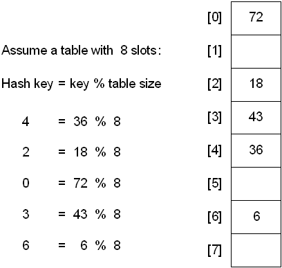
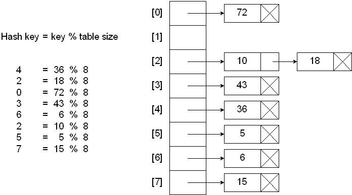
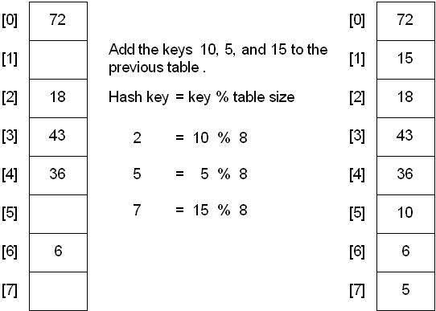
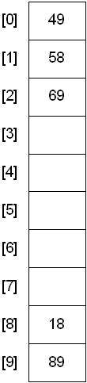
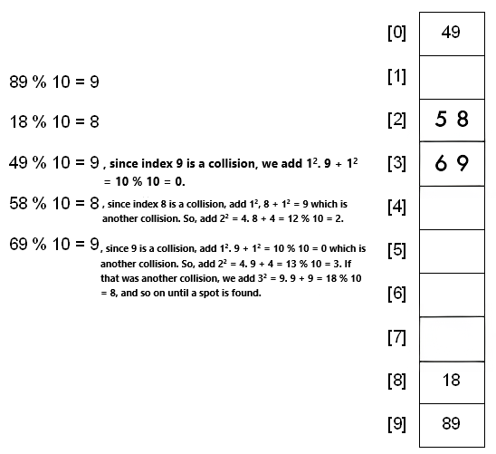
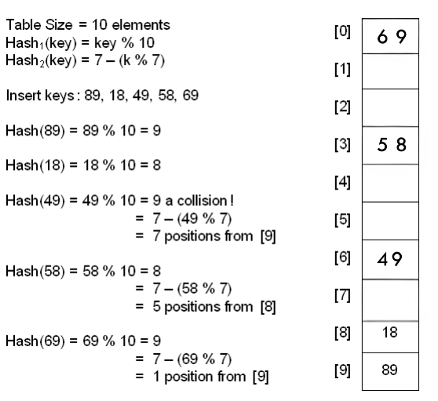

Hashing can be used to build, search, or delete from a table.
The basic idea behind hashing is to take a field in a record, known as the key, and convert it through some fixed process to a numeric value, known as the hash key, which represents the position to either store or find an item in the table. The numeric value will be in the range of 0 to n-1, where n is the maximum number of slots (or buckets) in the table.
The fixed process to convert a key to a hash key is known as a hash function. This function will be used whenever access to the table is needed.
One common method of determining a hash key is the division method of hashing. The formula that will be used is:
hash key = key % number of slots in the table

The division method is generally a reasonable strategy, unless the key happens to have some undesirable properties. For example, if the table size is 10 and all of the keys end in zero.
In this case, the choice of hash function and table size needs to be carefully considered. The best table sizes are prime numbers.
One problem though is that keys are not always numeric. In fact, it's common for them to be strings.
One possible solution: add up the ASCII values of the characters in the string to get a numeric value and then perform the division method.
int hashValue = 0; for( int j = 0; j < stringKey.length(); j++ ) hashValue += stringKey[j]; int hashKey = hashValue % tableSize;
The previous method is simple, but it is flawed if the table size is large. For example, assume a table size of 10007 and that all keys are eight or fewer characters long.
No matter what the hash function, there is the possibility that two keys could resolve to the same hash key. This situation is known as a collision.
When this occurs, there are two simple solutions:
And two slightly more difficult solutions
When a collision occurs, elements with the same hash key will be chained together. A chain is simply a linked list of all the elements with the same hash key.
The hash table slots will no longer hold a table element. They will now hold the address of a table element.

Compute the hash key
If slot at hash key is null
Key not found
Else
Search the chain at hash key for the desired key
Endif
Compute the hash key
If slot at hash key is null
Insert as first node of chain
Else
Search the chain for a duplicate key
If duplicate key
Don’t insert
Else
Insert into chain
Endif
Endif
Compute the hash key
If slot at hash key is null
Nothing to delete
Else
Search the chain for the desired key
If key is not found
Nothing to delete
Else
Remove node from the chain
Endif
Endif
When using a linear probe, the item will be stored in the next available slot in the table, assuming that the table is not already full.
This is implemented via a linear search for an empty slot, from the point of collision. If the physical end of table is reached during the linear search, the search will wrap around to the beginning of the table and continue from there.
If an empty slot is not found before reaching the point of collision, the table is full.

A problem with the linear probe method is that it is possible for blocks of data to form when collisions are resolved. This is known as primary clustering.
This means that any key that hashes into the cluster will require several attempts to resolve the collision.
For example, insert the nodes 89, 18, 49, 58, and 69 into a hash table that holds 10 items using the division method and linear probing:

To resolve the primary clustering problem, quadratic probing can be used. With quadratic probing, rather than always moving one spot, add i2 spots from the point of collision, where i is the number of attempts to resolve the collision.

Limitation: at most half of the table can be used as alternative locations to resolve collisions.
This means that once the table is more than half full, it's difficult to find an empty spot. This new problem is known as secondary clustering because elements that hash to the same hash key will always probe the same alternative cells.
Double hashing uses the idea of applying a second hash function to the key when a collision occurs. The result of the second hash function will be the number of positions form the point of collision to insert.
There are a couple of requirements for the second function:
A popular second hash function is: Hash2(key) = R - ( key % R ) where R is a prime number that is smaller than the size of the table.

Once the hash table gets too full, the running time for operations will start to take too long and may fail. To solve this problem, a table at least twice the size of the original will be built and the elements will be transferred to the new table.
The new size of the hash table:
This is a very expensive operation! O(N) since there are N elements to rehash and the table size is roughly 2N. This is ok though since it doesn't happen that often.
The question becomes when should the rehashing be applied?
Some possible answers:
The method of deletion depends on the method of insertion. In any of the cases, the same hash function(s) will be used to find the location of the element in the hash table.
There is a major problem that can arise if a collision occurred when inserting -- it's possible to "lose" an element.